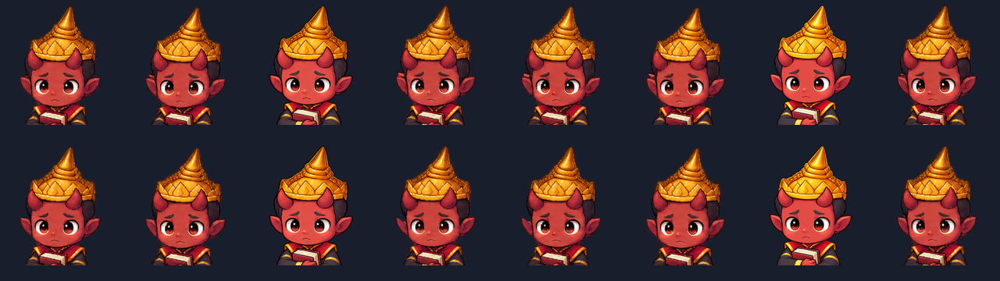
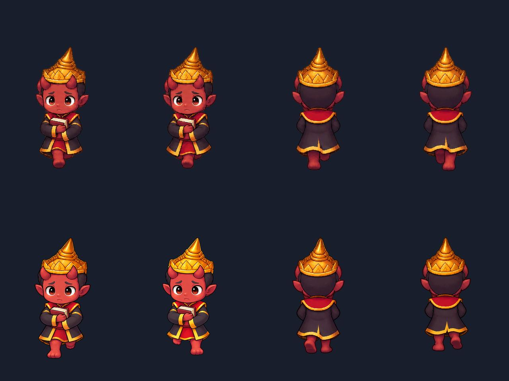
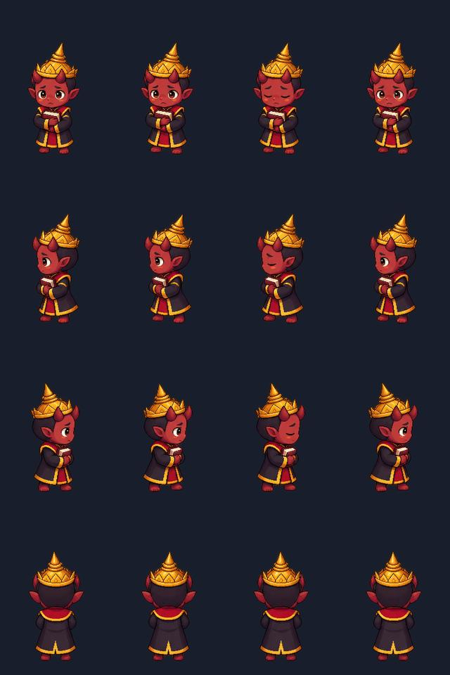

AVEGEE / MAP CHARACTER STUDY
ท่ายืนพักใหม่และวงรอบเดิน 8 เฟรม ครบหน้า ซ้าย ขวา และหลัง เปรียบเทียบกับท่าเดินเดิมได้ในทิศเดียวกัน
v6: ตัดขอบหูซ้อนครบทุกเฟรมหน้า · รักษาท่าขา v4 เดิม · ซ้าย–ขวาคงเดิม · ยังไม่แทนภาพในเกมจริง
กำลังโหลด…
4 เฟรมเดิม · ใช้รอบเวลาเท่ากันเพื่อเทียบรูปร่างและความต่อเนื่อง
กำลังโหลด…
เปรียบเทียบด้วยรอบเดิน 800 ms เท่ากัน · ตำแหน่งกล้องคงที่ พื้นเลื่อนแทนการเดินทาง · ไม่ใช่การปรับความเร็วเดินในเกมจริง
แถวบน: ก่อน · แถวล่าง: หลัง · คงขาและลำตัวเดิมทุกเฟรม

แถวบน: ก่อนแก้ · แถวล่าง: หลังแก้ · จากซ้าย: หน้าท่า 3, หน้าท่า 7, หลังท่า 3, หลังท่า 7



ใช้ต้นแบบ img/hero-yama.png และ hero-yama-walk-4dir-v2.png · ไฟล์ทั้งหมดอยู่ใน output/spa-pilot-20261015/map-book-v1 · ไม่แตะ src แผนที่ UI เซฟ หรือภาพต้นฉบับ